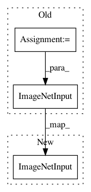

21cd0774c8c3d41a8464427c81629075c953e7e3,models/experimental/keras/resnet50.py,,main,#Any#,59
Before Change
// Direct evaluation with datasets is coming in TF 1.11. For now,
// we can perform evaluation using a standard Python generator with a smaller
// batch size.
batch_size = 32 * num_cores
imagenet_eval = imagenet_input.ImageNetInput(
is_training=False,
data_dir=FLAGS.data,
// In normal execution, our dataset would generate data for each TPU
// core. In this case, because we are feeding in from a Keras generator,
// we want to build a single batch for all of the cores, which will then
// be split for us.
per_core_batch_size=batch_size)
score = model.evaluate_generator(
imagenet_eval.evaluation_generator(session_master),
steps=int(APPROX_IMAGENET_TEST_IMAGES // batch_size),
verbose=1)
After Change
logging.info("Evaluating the model on synthetic data.")
model.evaluate(training_images, training_labels, verbose=0)
else:
imagenet_train, imagenet_eval = [imagenet_input.ImageNetInput(
is_training=is_training,
data_dir=FLAGS.data,
per_core_batch_size=PER_CORE_BATCH_SIZE)
for is_training in [True, False]]
logging.info("Training model using real data in directory "%s".",
FLAGS.data)
num_epochs = 90 // Standard imagenet training regime.
In pattern: SUPERPATTERN
Frequency: 3
Non-data size: 3
Instances
Project Name: tensorflow/tpu
Commit Name: 21cd0774c8c3d41a8464427c81629075c953e7e3
Time: 2018-09-05
Author: xiejw0217@gmail.com
File Name: models/experimental/keras/resnet50.py
Class Name:
Method Name: main
Project Name: tensorflow/tpu
Commit Name: 6fba896139f58be395742137385ccf5c72ec7416
Time: 2018-08-24
Author: xiejw0217@gmail.com
File Name: models/experimental/keras/resnet50.py
Class Name:
Method Name: main
Project Name: tensorflow/tpu
Commit Name: fa19bd7fc3a5ddb4583312448fe750031c145d5f
Time: 2018-10-15
Author: shizhiw@google.com
File Name: models/experimental/keras/resnet50.py
Class Name:
Method Name: main